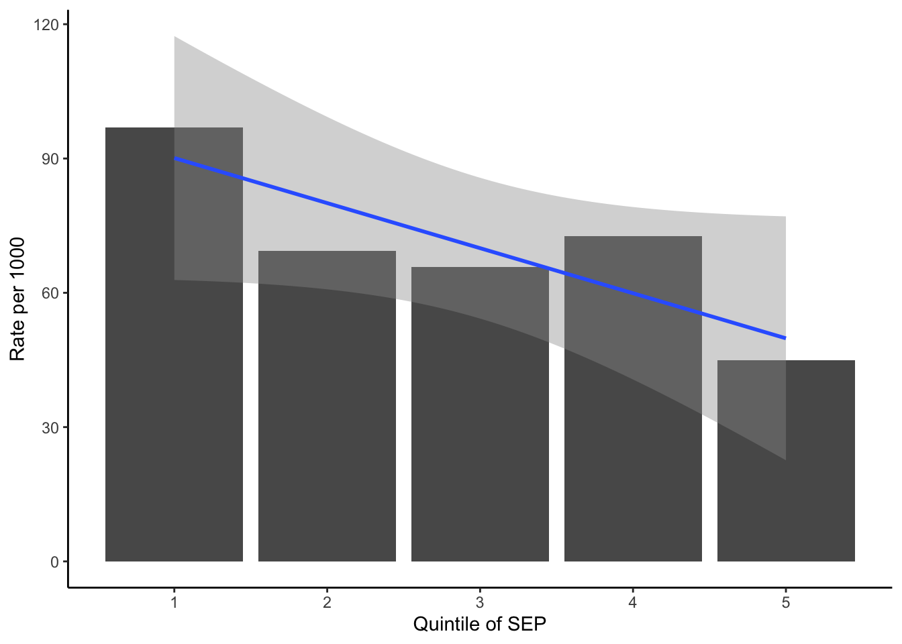

# load packages
library(tidyverse)
library(kableExtra)
library(marginaleffects)Rank-based Inequality Models
Setup
First let’s simulate some data. The code below will create a dataset of 3500 observations with 5 quintiles of SEP and a binary outcome (e.g., infant mortality rates). The quintiles have different population sizes to simulate weighted data.
set.seed(4861)
q1pop <- 1000
q1r <- rbinom(q1pop, size = 1, prob = 100/1000)
q2pop <- 850
q2r <- rbinom(q2pop, size = 1, prob = 85/1000)
q3pop <- 700
q3r <- rbinom(q3pop, size = 1, prob = 75/1000)
q4pop <- 550
q4r <- rbinom(q4pop, size = 1, prob = 60/1000)
q5pop <- 400
q5r <- rbinom(q5pop, size = 1, prob = 50/1000)
dat <- tibble(
q = rep(c(1,2,3,4,5), c(1000,850,700,550,400)),
y = c(q1r, q2r, q3r, q4r, q5r)
)Descriptives
A table of outcome rates by quintile looks like this:
datg <- dat %>% group_by(q) %>%
summarize(events = sum(y),
mean_y = 1000*mean(y),
pop = n())
datg %>%
kbl(digits = 1,
col.names = c("Quintile", "Events",
"Rate per 1000", "Pop")) %>%
kable_styling()| Quintile | Events | Rate per 1000 | Pop |
|---|---|---|---|
| 1 | 97 | 97.0 | 1000 |
| 2 | 59 | 69.4 | 850 |
| 3 | 46 | 65.7 | 700 |
| 4 | 40 | 72.7 | 550 |
| 5 | 18 | 45.0 | 400 |
And a simple bar chart and linear fit show that the outcome decreases as one moves up the quintiles.
datg %>%
ggplot(aes(x = q, y = mean_y)) +
geom_col() + geom_smooth(method = "lm") +
theme_classic() +
labs(x = "Quintile of SEP", y = "Rate per 1000")
Okay, now let’s create a ranking variable for the SII/RII based on the individual-level data. Since we have a categorical measure of SEP, we have to use the average of the ranks for each group. The resulting data looks like this:
dat <- dat %>% arrange(q) %>%
mutate(ppop = 1/length(q),
rank = (cumsum(ppop) - 0.5 * ppop)/sum(ppop)) %>%
group_by(q) %>%
mutate(avrank = mean(rank)) %>%
ungroup()
kable(head(dat, n=10), digits=3) %>%
kable_styling()| q | y | ppop | rank | avrank |
|---|---|---|---|---|
| 1 | 0 | 0 | 0.000 | 0.143 |
| 1 | 0 | 0 | 0.000 | 0.143 |
| 1 | 0 | 0 | 0.001 | 0.143 |
| 1 | 0 | 0 | 0.001 | 0.143 |
| 1 | 0 | 0 | 0.001 | 0.143 |
| 1 | 0 | 0 | 0.002 | 0.143 |
| 1 | 0 | 0 | 0.002 | 0.143 |
| 1 | 0 | 0 | 0.002 | 0.143 |
| 1 | 0 | 0 | 0.002 | 0.143 |
| 1 | 1 | 0 | 0.003 | 0.143 |
SII/RII in Stata
To generate the estimates in Stata from R, we need the RStata package and to tell the system where to find the Stata executable file.
library(RStata)
options("RStata.StataVersion" = 16)
options("RStata.StataPath"= '/Applications/Stata/StataMP.app/Contents/MacOS/stata-mp')To estimate the SII/RII we use the glm function to estimate the non-linear regression, and the margins command to generate the SII and RII based on the predicted outcomes at the minimum and maximum of the SEP scale.
Unweighted
s_est <- '
glm y avrank, link(logit) family(binomial) robust nolog cformat(%4.3f)
margins, at(avrank=(0 1)) post
nlcom (SII: (_b[2._at] - _b[1._at])), cformat(%4.3f)
* symmetric 95%CIs using nlcom for ratio
nlcom (RII: _b[2._at] / _b[1._at]), cformat(%4.3f)
* use the lnRII instead and then exponentiate
nlcom (lnRII: ln(_b[2._at] / _b[1._at])), post
* should be non-symmetric
lincom lnRII, eform cformat(%4.3f)
'
stata(s_est, data.in=dat).
. glm y avrank, link(logit) family(binomial) robust nolog cformat(%4.3f)
Generalized linear models Number of obs = 3,500
Optimization : ML Residual df = 3,498
Scale parameter = 1
Deviance = 1841.789772 (1/df) Deviance = .5265265
Pearson = 3501.348343 (1/df) Pearson = 1.000957
Variance function: V(u) = u*(1-u) [Bernoulli]
Link function : g(u) = ln(u/(1-u)) [Logit]
AIC = .5273685
Log pseudolikelihood = -920.8948859 BIC = -26703.7
------------------------------------------------------------------------------
| Robust
y | Coef. Std. Err. z P>|z| [95% Conf. Interval]
-------------+----------------------------------------------------------------
avrank | -0.744 0.236 -3.15 0.002 -1.207 -0.281
_cons | -2.169 0.124 -17.44 0.000 -2.413 -1.925
------------------------------------------------------------------------------
. margins, at(avrank=(0 1)) post
Adjusted predictions Number of obs = 3,500
Model VCE : Robust
Expression : Predicted mean y, predict()
1._at : avrank = 0
2._at : avrank = 1
------------------------------------------------------------------------------
| Delta-method
| Margin Std. Err. z P>|z| [95% Conf. Interval]
-------------+----------------------------------------------------------------
_at |
1 | .1025659 .0114498 8.96 0.000 .0801247 .1250072
2 | .0515011 .0070809 7.27 0.000 .0376229 .0653793
------------------------------------------------------------------------------
. nlcom (SII: (_b[2._at] - _b[1._at])), cformat(%4.3f)
SII: (_b[2._at] - _b[1._at])
------------------------------------------------------------------------------
| Coef. Std. Err. z P>|z| [95% Conf. Interval]
-------------+----------------------------------------------------------------
SII | -0.051 0.016 -3.12 0.002 -0.083 -0.019
------------------------------------------------------------------------------
. * symmetric 95%CIs using nlcom for ratio
. nlcom (RII: _b[2._at] / _b[1._at]), cformat(%4.3f)
RII: _b[2._at] / _b[1._at]
------------------------------------------------------------------------------
| Coef. Std. Err. z P>|z| [95% Conf. Interval]
-------------+----------------------------------------------------------------
RII | 0.502 0.110 4.58 0.000 0.287 0.717
------------------------------------------------------------------------------
.
. * use the lnRII instead and then exponentiate
. nlcom (lnRII: ln(_b[2._at] / _b[1._at])), post
lnRII: ln(_b[2._at] / _b[1._at])
------------------------------------------------------------------------------
| Coef. Std. Err. z P>|z| [95% Conf. Interval]
-------------+----------------------------------------------------------------
lnRII | -.6889027 .218547 -3.15 0.002 -1.117247 -.2605584
------------------------------------------------------------------------------
.
. * should be non-symmetric
. lincom lnRII, eform cformat(%4.3f)
( 1) lnRII = 0
------------------------------------------------------------------------------
| exp(b) Std. Err. z P>|z| [95% Conf. Interval]
-------------+----------------------------------------------------------------
(1) | 0.502 0.110 -3.15 0.002 0.327 0.771
------------------------------------------------------------------------------Weighted
First create the ranking variable based on the group population
datw <- datg %>% arrange(q) %>%
mutate(ppop = pop / sum(pop),
rank = (cumsum(ppop) - 0.5 * ppop)/sum(ppop)) Now for the weighted regression in Stata
s_estw <- '
glm events rank, family(binomial pop) link(logit) robust nolog cformat(%4.3f)
margins, at(rank=(0 1)) post expression(predict(mu)/pop)
nlcom (SII: (_b[2._at] - _b[1._at])), cformat(%4.3f)
* symmetric 95%CIs using nlcom for ratio
nlcom (RII: _b[2._at] / _b[1._at]), cformat(%4.3f)
* use the lnRII instead and then exponentiate
nlcom (lnRII: ln(_b[2._at] / _b[1._at])), post
* should be non-symmetric
lincom lnRII, eform cformat(%4.3f)
'
stata(s_estw, data.in=datw).
. glm events rank, family(binomial pop) link(logit) robust nolog cformat(%4.3f)
Generalized linear models Number of obs = 5
Optimization : ML Residual df = 3
Scale parameter = 1
Deviance = 3.422320699 (1/df) Deviance = 1.140774
Pearson = 3.484972657 (1/df) Pearson = 1.161658
Variance function: V(u) = u*(1-u/pop) [Binomial]
Link function : g(u) = ln(u/(pop-u)) [Logit]
AIC = 7.066007
Log pseudolikelihood = -15.66501761 BIC = -1.405993
------------------------------------------------------------------------------
| Robust
events | Coef. Std. Err. z P>|z| [95% Conf. Interval]
-------------+----------------------------------------------------------------
rank | -0.744 0.208 -3.57 0.000 -1.153 -0.336
_cons | -2.169 0.082 -26.44 0.000 -2.330 -2.008
------------------------------------------------------------------------------
. margins, at(rank=(0 1)) post expression(predict(mu)/pop)
Adjusted predictions Number of obs = 5
Model VCE : Robust
Expression : predict(mu)/pop
1._at : rank = 0
2._at : rank = 1
------------------------------------------------------------------------------
| Delta-method
| Margin Std. Err. z P>|z| [95% Conf. Interval]
-------------+----------------------------------------------------------------
_at |
1 | .1025659 .00755 13.58 0.000 .0877681 .1173637
2 | .0515011 .0072788 7.08 0.000 .037235 .0657672
------------------------------------------------------------------------------
. nlcom (SII: (_b[2._at] - _b[1._at])), cformat(%4.3f)
SII: (_b[2._at] - _b[1._at])
------------------------------------------------------------------------------
| Coef. Std. Err. z P>|z| [95% Conf. Interval]
-------------+----------------------------------------------------------------
SII | -0.051 0.013 -3.86 0.000 -0.077 -0.025
------------------------------------------------------------------------------
. * symmetric 95%CIs using nlcom for ratio
. nlcom (RII: _b[2._at] / _b[1._at]), cformat(%4.3f)
RII: _b[2._at] / _b[1._at]
------------------------------------------------------------------------------
| Coef. Std. Err. z P>|z| [95% Conf. Interval]
-------------+----------------------------------------------------------------
RII | 0.502 0.098 5.15 0.000 0.311 0.693
------------------------------------------------------------------------------
.
. * use the lnRII instead and then exponentiate
. nlcom (lnRII: ln(_b[2._at] / _b[1._at])), post
lnRII: ln(_b[2._at] / _b[1._at])
------------------------------------------------------------------------------
| Coef. Std. Err. z P>|z| [95% Conf. Interval]
-------------+----------------------------------------------------------------
lnRII | -.6889027 .1943208 -3.55 0.000 -1.069764 -.3080409
------------------------------------------------------------------------------
.
. * should be non-symmetric
. lincom lnRII, eform cformat(%4.3f)
( 1) lnRII = 0
------------------------------------------------------------------------------
| exp(b) Std. Err. z P>|z| [95% Conf. Interval]
-------------+----------------------------------------------------------------
(1) | 0.502 0.098 -3.55 0.000 0.343 0.735
------------------------------------------------------------------------------SII/RII in R
Unweighted
In R we can use the basic glm function and the marginaleffects package to pretty much the exact same thing. See the extensive website for direct comparisons between R and Stata, but marginaleffects also allows many different flavors of standard errors (clustered, heteroskedastic, etc.). Below I use the “HC1” errors that are most similar to Stata’s robust option.
mod <- glm(y ~ avrank, data = dat,
family = "binomial")
summary(mod)
Call:
glm(formula = y ~ avrank, family = "binomial", data = dat)
Deviance Residuals:
Min 1Q Median 3Q Max
-0.4423 -0.4423 -0.3719 -0.3487 2.4190
Coefficients:
Estimate Std. Error z value Pr(>|z|)
(Intercept) -2.1690 0.1235 -17.559 < 2e-16 ***
avrank -0.7442 0.2338 -3.184 0.00145 **
---
Signif. codes: 0 '***' 0.001 '**' 0.01 '*' 0.05 '.' 0.1 ' ' 1
(Dispersion parameter for binomial family taken to be 1)
Null deviance: 1852.1 on 3499 degrees of freedom
Residual deviance: 1841.8 on 3498 degrees of freedom
AIC: 1845.8
Number of Fisher Scoring iterations: 5sii <- avg_comparisons(mod, comparison = function(hi, lo)
hi - lo, vcov = "HC1")
rii <- avg_comparisons(mod, comparison = function(hi, lo)
hi / lo, vcov = "HC1")
sii %>% bind_rows(rii) %>%
add_column(measure = c("SII", "RII")) %>%
select(measure, estimate, conf.low, conf.high) %>%
kbl(digits = 2, escape = F,
col.names = c("Measure", "Estimate", "95% LL", "95% UL")) %>%
add_header_above(c(" " = 1,
"Slope and Relative Index of Inequality" = 3)) %>%
kable_classic(html_font = "Helvetica", full_width = F) %>%
footnote(general = "Unweighted data with robust standard errors")| Measure | Estimate | 95% LL | 95% UL |
|---|---|---|---|
| SII | -0.05 | -0.08 | -0.02 |
| RII | 0.50 | 0.29 | 0.72 |
| Note: | |||
| Unweighted data with robust standard errors |
Overall the point estimates are identical to those from the weighted or unweighted analyses done using Stata, and the standard errors are nearly identical to those from the individual-level analysis using Stata.
Weighted
R doesn’t have a simple way of running the weighted GLM for a non-linear model, but we can feed the glm function a formula that includes the events and nonevents as a function of the rank variable, which will produce pretty similar estimates as we got from Stata.
datw <- datw %>% mutate(nonevents = pop - events)
modw <- glm(formula = cbind(events, nonevents) ~ rank,
weights = pop, data = datw,
family = binomial("logit"))
summary(modw)
Call:
glm(formula = cbind(events, nonevents) ~ rank, family = binomial("logit"),
data = datw, weights = pop)
Deviance Residuals:
1 2 3 4 5
11.932 -27.083 -2.332 31.982 -14.898
Coefficients:
Estimate Std. Error z value Pr(>|z|)
(Intercept) -2.162870 0.004141 -522.3 <2e-16 ***
rank -0.760737 0.009024 -84.3 <2e-16 ***
---
Signif. codes: 0 '***' 0.001 '**' 0.01 '*' 0.05 '.' 0.1 ' ' 1
(Dispersion parameter for binomial family taken to be 1)
Null deviance: 9481.7 on 4 degrees of freedom
Residual deviance: 2126.1 on 3 degrees of freedom
AIC: 22210
Number of Fisher Scoring iterations: 4sii <- avg_comparisons(modw, comparison = function(hi, lo)
hi - lo, vcov = "HC1")
rii <- avg_comparisons(modw, comparison = function(hi, lo)
hi / lo, vcov = "HC1")
sii %>% bind_rows(rii) %>%
add_column(measure = c("SII", "RII")) %>%
select(measure, estimate, conf.low, conf.high) %>%
kbl(digits = 2, escape = F,
col.names = c("Measure", "Estimate", "95% LL", "95% UL")) %>%
add_header_above(c(" " = 1,
"Slope and Relative Index of Inequality" = 3)) %>%
kable_classic(html_font = "Helvetica", full_width = F) %>%
footnote(general = "Weighted data with robust standard errors")| Measure | Estimate | 95% LL | 95% UL |
|---|---|---|---|
| SII | -0.05 | -0.08 | -0.02 |
| RII | 0.49 | 0.29 | 0.70 |
| Note: | |||
| Weighted data with robust standard errors |
These estiamtes are quite similar to those produce using Stata’s weighted GLM model.